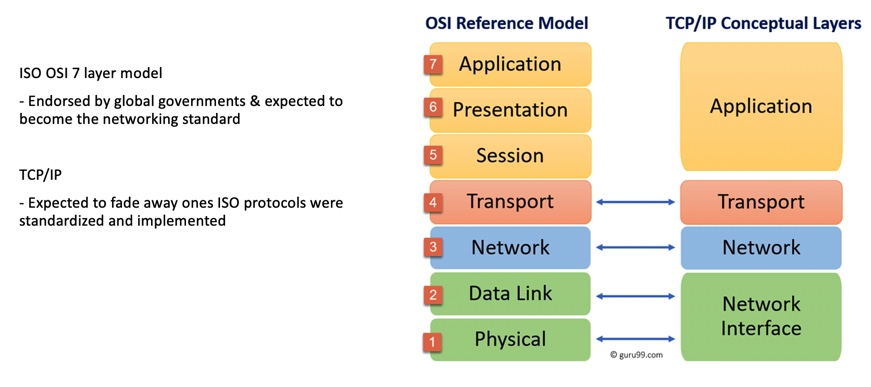
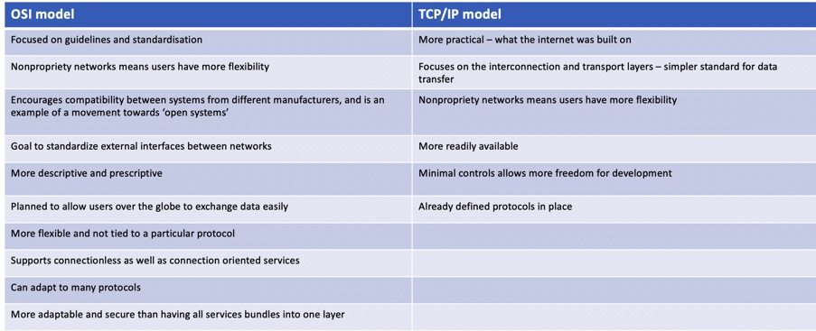

Seminar 2: TCP/IP vs ISO/OSI Model
Preparation
In preparation for this seminar we were to read Read: Russell, A.L. (2006) ‘Rough Consensus and Running Code’ and the Internet-OSI Standards War. IEEE Annals of the History of Computing. Available from: https://www2.cs.duke.edu/courses/common/compsci092/papers/govern/consensus.pdf and then consider answer the following;
“Would the Internet we have today be much better if it was based on the ISO/ OSI 7-layer model rather than TCP/IP?"
Firstly I reviewed the differences between the two models and created some charts to identify the advantages and disadvantages and where the two models were similar.


Based on the above and further reading I detemrined that although the ISO OSI models offers a framework to try and standardise the way we use networks, this is more theoretical and in practice the TCP/IP model has stood the test of time.
As with anything, once something has become established it can be difficult to try and change the way people work, had the OSI model been further along earlier in the development stages of the internet, it likely could have been better adopted.
Had the internet been based on the OSI model, there may have been more standardisation but the TCP/IP model may have come along anyway and therfore there would still have been a mix of the two.